Экшен (Action)
Экшен (action в переводе с англ. — «действие») — жанр компьютерных игр, в котором делается упор на эксплуатацию физических возможностей игрока, в том числе координации глаз и рук и скорости реакции.
Шутеры
Шу́тер (Стрелялка, англ. shooter — «стрелок») — жанр компьютерных игр. На момент зарождения жанра за рубежом укрепилось слово «шутер», как вариант описания игрового процесса и перевод для слова shooter, в России и некоторых других странах постсоветского пространства жанр изначально был назван как «стрелялка».
- 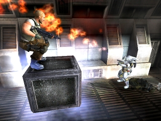

- 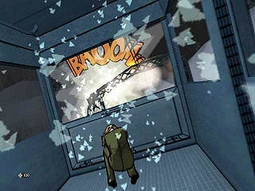
- 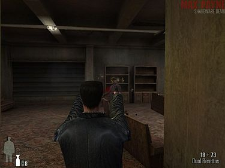
Главное действие — уничтожение всего, что движется. Количество боеприпасов почти всегда неограниченное, поэтому стрельбу можно вести постоянно. Камера может быть двух видов: вид сверху (тогда герой либо находится в центре экрана, а со всех сторон прут враги («Alien Shooter»), либо он движется вперед с постоянной скоростью, тем самым в границы экрана попадают всё новые и новые враги ) или вид из глаз (при этом герой либо всегда стоит на месте («Moorhuhn»), либо автоматически передвигается на новую позицию, после уничтожения всех врагов на текущем месте («House of the Dead»).
Стелс
Стелс (англ. stealth «невидимка; скрытность») — жанр компьютерных игр, в которых игрок должен избегать обнаружения игрового персонажа противниками или скрытно устранять их, не привлекая к себе внимания. Чтобы остаться незамеченным в этих играх, игровой персонаж должен прятаться от врагов, использовать маскировку и не создавать шума. Многие игры предоставляют игроку выбор — атаковать врагов открыто или сохранить скрытность; тем не менее, большинство игр поощряют игрока за сохранение максимально возможной степени скрытности. В играх жанра используются мотивы шпионажа, контртерроризма и преступности. Протагонистами могут быть оперативники подразделений специального назначения, шпионы, воры, ниндзя, ассасины. В некоторых играх стелс-элементы комбинируется с геймплеем других жанров, например с шутерами от первого лица и даже с платформерами.
- 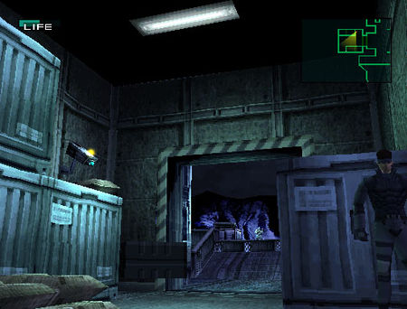


- 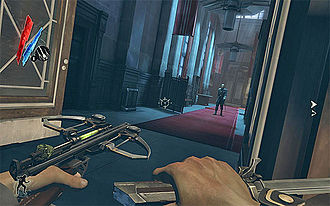
В отличие от большинства экшн-игр, в играх жанра стелс обычно необходимо избегать обнаружения врагом. Основными элементами геймплея современных стелс-игр являются разные способы уклониться от стычек с врагом, создание максимальной бесшумности, а также эффект неожиданности при атаке врагов из теней. Обычным делом в этих играх является выполнение заданий, оставаясь незамеченным врагом, что некоторые критики описывают как «призрачность». Несмотря на то, что в отдельных играх скрытность может быть единственным способом выиграть, в большинстве игр обычно предусматриваются другие способы и стили достижения поставленной задачи. Игроки могут прятаться за предметами или скрываться в тенях, а при встрече с врагом могут или атаковать его, или незаметно проскользнуть мимо. Если игрок будет обнаружен врагом, обычно требуется спрятаться на некоторое время, пока враги не прекратят поиск. Таким образом, важность приобретают планирование и метод проб и ошибок. Однако, в некоторых стелс-играх придаётся важность мастерству рукопашного боя, которое становится полезным в случае обнаружения персонажа врагом. В некоторых играх игрок может выбирать между убийством врагов или простым его оглушением. Если «призрачность» необязательна для прохождения, либо в недостаточной степени реализована в игре, игроки все же могут пробовать избегать сражений по моральным причинам или для демонстрации своего мастерства.
Аркады
Аркада (англ. arcade game, arcade genre) — жанр компьютерных игр, характеризующийся коротким по времени, но интенсивным игровым процессом.- 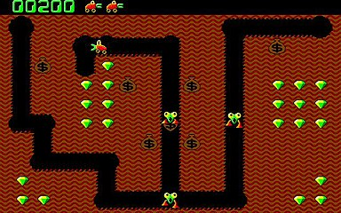
- 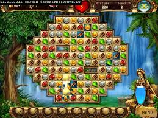
- 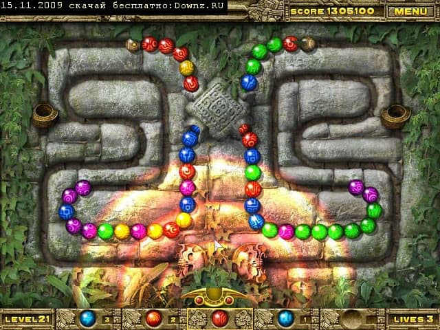
- 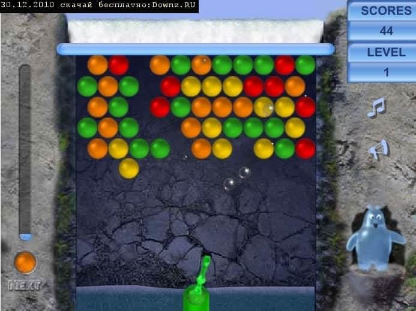
Появление слова «аркада» связано с простейшими игровыми автоматами, игры которых пытались выделить в жанр. Слово «аркада» используется и как прилагательное к другим жанрам, например: аркадный платформер, аркадный шутер, аркадные гонки. Под словом "аркадный" обычно понимают - нереалистичный, более простой чем в реальности. Это один из самых старых жанров. Эталонные игры этого жанра можно найти сейчас только на старых консолях. В настоящее время к этому жанру относятся только самые простые игры действия.
Главная задача - собрать все особые объекты на уровне (иногда бывают более спецефичные задачи: закрасить весь уровень, найти выход, попасть в определенную точку). Чаще всего вид сверху, реже - вид сбоку. Безмятежный процесс сбора вещей нарушается присутствием на уровнях врагов или ловушек.
Самым известным представителем этого жанра является игра "Pacman".
Файтинги
Фáйтинг (от англ. Fighting — бой, драка, поединок, борьба) — жанр компьютерных игр, имитирующих рукопашный бой малого числа персонажей в пределах ограниченного пространства, называемого ареной.- 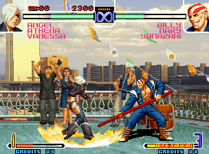
- 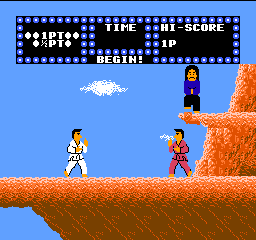
- 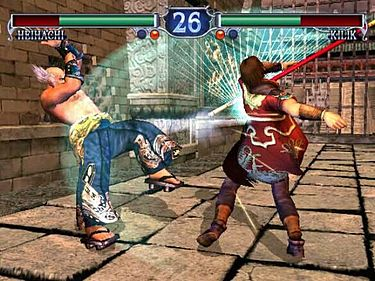
- 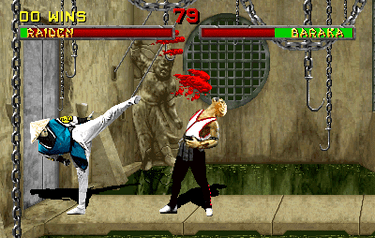
Файтинги близки к играм жанра «Избей их всех», однако между ними существуют различия. Так, в большинстве файтингов игроку не требуется перемещаться по длинному уровню и нельзя выйти за границы арены, а бой состоит из нечётного числа отдельных раундов и не является непрерывным. Менее значительными и необязательно присутствующими признаками жанра являются использование многочисленных шкал для изображения жизненно важных показателей персонажей и прорисовка бойцов на арене в профиль.
Action-adventure (приключенческий боевик)
Action-adventure, или приключенческий боевик — смешанный жанр компьютерных игр, сочетающий элементы квеста и экшена.- 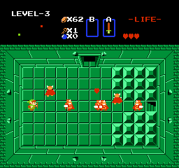

- 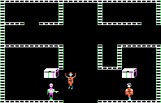
- 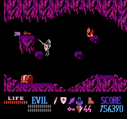
Подобные игры предлагают игроку преодолевать препятствия как интеллектуального, так и физического рода, например, испытания игрока на выносливость или скорость реакции; само определение того, когда такая игра перестает быть квестом и превращается в чистую action-игру, является лишь вопросом интерпретации. К элементам квеста могут принадлежать головоломки; сюжет, многочисленные персонажи, диалоги между ними, инвентарь для собранных предметов и другие приметы жанра квестов. При этом по сравнению с квестами action-adventure в большой степени опираются на перемещение персонажа в виртуальном мире игры — это относится и к геймплею, в котором могут преобладать сражения, и к сюжету: перемещение заставляет запускаться сюжетные сцены, в соответствии с которыми меняется темп игры и контекст действий игрока.